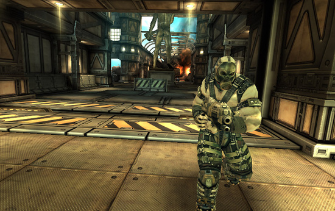
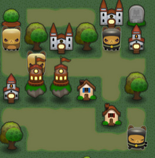
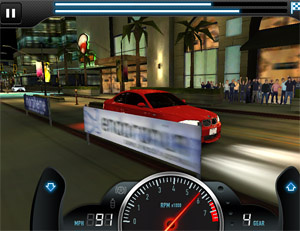
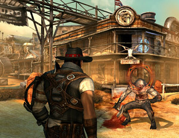

iOS Hardware Guide
Hardware models
The following list summarizes iOS hardware available in devices of various generations:
iPhone Models
Original iPhone
- Screen: 320x480 pixels, LCD at 163ppi
- ARM11, 412 Mhz CPU
- PowerVR MBX Lite 3D graphics processor (slow)
- 128MB of memory
- 2 megapixel camera
iPhone 3G
- Screen: 320x480 pixels, LCD at 163ppi
- ARM11, 412 Mhz CPU
- PowerVR MBX Lite 3D graphics processor (slow)
- 128MB of memory
- 2 megapixel camera
- GPS support
iPhone 3G: Fixed-function graphics (no fancy shaders), very slow CPU and GPU.
iPhone 3GS
Screen: 320x480 pixels, LCD at 163ppi
ARM Cortex A8, 600 MHz CPU
PowerVR SGX535 graphics processor
Shader perfomance at native resolution, compared to iPad2:
Raw shader perfomance, compared to iPad3:
256MB of memory
3 megapixel camera with video capture capability
GPS support
Compass support
 iPhone 3GS: Shader-capable hardware, per-pixel-lighting (bumpmaps) can only be on small portions of the screen at once. Requires scripting optimization for complex games. This is the average hardware of the app market as of July 2012
iPhone 4
Screen: 960x640 pixels, LCD at 326 ppi, 800:1 contrast ratio.
Apple A4 1Ghz ARM Cortex-A8 CPU
PowerVR SGX535 GPU
Shader perfomance at native resolution, compared to iPad2:
Raw shader perfomance, compared to iPad3:

512MB of memory
Rear 5.0 MP backside illuminated CMOS image sensor with 720p HD video at 30 fps and LED flash
Front 0.3 MP (VGA) with geotagging, tap to focus, and 480p SD video at 30 fps
GPS support
Compass Support
iPhone 4S
Screen: 960x640 pixels, LCD at 326 ppi, 800:1 contrast ratio.
Apple A5 Dual-Core 1Ghz ARM Cortex-A9 MPCore CPU
Dual-Core PowerVR SGX543MP2 GPU
Shader perfomance at native resolution, compared to iPad2:
Raw shader perfomance, compared to iPad3:
512MB of memory
Rear 8.0 MP backside illuminated CMOS image sensor with 1080p HD video at 30 fps, face detection and video stabilization.
Front 0.3 MP (VGA) with geotagging, tap to focus, and 480p SD video at 30 fps
GPS support
Compass Support
The iPhone 4S, with the new A5 chip, is capable of rendering complex shaders throughout the entire screen. Even image effects may be possible. However, optimizing your shaders is still crucial. But if your game isn’t trying to push limits of the device, optimizing scripting and gameplay is probably as much of a waste of time on this generation of devices as it is on PC.
iPhone 5
Screen: 1136x640 pixels, LCD at 326 ppi.
Apple A6 Dual-Core 1.3Ghz Apple-designed ARMv7s CPU
Triple-Core PowerVR SGX543MP3 GPU
Shader perfomance at native resolution, compared to iPad2:
Raw shader perfomance, compared to iPad3:
1GB of memory
Rear 8.0 MP infra-red cut-off filter, back-illuminated sensor available to take videos while shooting videos.
Front 0.3 MP (VGA) with geotagging, tap to focus, and 480p SD video at 30 fps
GPS support
Compass Support
iPod Touch Models
iPod Touch 1st generation
- Screen: 320x480 pixels, LCD at 163ppi
- ARM11, 412 Mhz CPU
- PowerVR MBX Lite 3D graphics processor (slow)
- 128MB of memory
 iPod Touch: Fixed-function graphics (no fancy shaders), very slow CPU and GPU.
iPod Touch 2nd generation
- Screen: 320x480 pixels, LCD at 163ppi
- ARM11, 533 Mhz CPU
- PowerVR MBX Lite 3D graphics processor (slow)
- 128MB of memory
- Speaker and microphone
iPod Touch 3rd generation
- Comparable to iPhone 3GS
 iPod Touch 3rd gen: Shader-capable hardware, per-pixel-lighting (bumpmaps) can only be on small portions of the screen at once. Requires scripting optimization for complex games. This is the average hardware of the app market as of July 2012
iPod Touch 4th generation
- Comparable to iPhone 4
iPod Touch 5th generation
- Comparable to iPhone 4s
iPad Models
iPad
Screen: 1024x768 pixels, LCD at 132 ppi, LED-backlit.
Apple A4 1Ghz MHz ARM Cortex-A8 CPU
PowerVR SGX535 GPU
Shader perfomance at native resolution, compared to iPad2:
Raw shader perfomance, compared to iPad3:
Wifi + Blueooth + (3G Cellular HSDPA, 2G cellular EDGE on the 3G version)
Accelerometer, ambient light sensor, magnetometer (for digital compass)
Mechanical keys: Home, sleep, screen rotation lock, volume.
iPad: Similar to iPod Touch 4th Generation and iPhone 4.
iPad 2
Screen: 1024x768 pixels, LCD at 132 ppi, LED-backlit.
Apple A5 Dual-Core 1Ghz ARM Cortex-A9 MPCore CPU
Dual-Core PowerVR SGX543MP2 GPU
Shader perfomance at native resolution, compared to iPad2:
Raw shader perfomance, compared to iPad3:
Same as Previous
iPad2: The A5 can do full screen bumpmapping, assuming the shader is simple enough. However, it is likely that your game will perform best with bumpmapping only on crucial objects. Full screen image effects still out of reach. Scripting optimization less important.
iPad (3rd generation)
Screen: 2048x1536 pixels, LCD at 264 ppi, LED-backlit.
Apple A5X
Dual-Core 1Ghz ARM Cortex-A9 MPCore CPU
Quad-Core PowerVR SGX543MP4 GPU
Shader perfomance at native resolution, compared to iPad2:
Raw shader perfomance, compared to iPad3:
 The iPad 3 has been shown to be capable of render-to-texture effects such as reflective water and fullscreen image effects. However, optimized shaders are still crucial. But if your game isn’t trying to push limits of the device, optimizing scripting and gameplay is probably as much of a waste of time on this generation of devices as it is on PC.
iPad (4rd generation)
Screen: 2048x1536 pixels, LCD at 264 ppi, LED-backlit.
Apple A6X Dual-Core 1.4Ghz ARM Cortex-A9 MPCore CPU
Quad-Core PowerVR SGX554MP4 GPU
Shader perfomance at native resolution, compared to iPad2:
Raw shader perfomance, compared to iPad3:
Graphics Processing Unit and Hidden Surface Removal
The iPhone/iPad graphics processing unit (GPU) is a Tile-Based Deferred Renderer. In contrast with most GPUs in desktop computers, the iPhone/iPad GPU focuses on minimizing the work required to render an image as early as possible in the processing of a scene. That way, only the visible pixels will consume processing resources.
The GPU’s frame buffer is divided up into tiles and rendering happens tile by tile. First, triangles for the whole frame are gathered and assigned to the tiles. Then, visible fragments of each triangle are chosen. Finally, the selected triangle fragments are passed to the rasterizer (triangle fragments occluded from the camera are rejected at this stage).
In other words, the iPhone/iPad GPU implements a Hidden Surface Removal operation at reduced cost. Such an architecture consumes less memory bandwidth, has lower power consumption and utilizes the texture cache better. Tile-Based Deferred Rendering allows the device to reject occluded fragments before actual rasterization, which helps to keep overdraw low.
For more information see also:-
- POWERVR MBX Technology Overview
- Apple Notes on iPhone/iPad GPU and OpenGL ES
- Apple Performance Advices for OpenGL ES in General
- Apple Performance Advices for OpenGL ES Shaders
MBX series
Older devices such as the original iPhone, iPhone 3G and iPod Touch 1st and 2nd Generation are equipped with the MBX series of GPUs. The MBX series supports only OpenGL ES1.1, the fixed function Transform/Lighting pipeline and two textures per fragment.
SGX series
Starting with the iPhone 3GS, newer devices are equipped with the SGX series of GPUs. The SGX series features support for the OpenGL ES2.0 rendering API and vertex and pixel shaders. The Fixed-function pipeline is not supported natively on such GPUs, but instead is emulated by generating vertex and pixel shaders with analogous functionality on the fly.
The SGX series fully supports MultiSample anti-aliasing.
Texture Compression
The only texture compression format supported by iOS is PVRTC. PVRTC provides support for RGB and RGBA (color information plus an alpha channel) texture formats and can compress a single pixel to two or four bits.
The PVRTC format is essential to reduce the memory footprint and to reduce consumption of memory bandwidth (ie, the rate at which data can be read from memory, which is usually very limited on mobile devices).
Vertex Processing Unit
The iPhone/iPad has a dedicated unit responsible for vertex processing which runs calculations in parallel with rasterization. In order to achieve better parallelization, the iPhone/iPad processes vertices one frame ahead of the rasterizer.
Unified Memory Architecture
Both the CPU and GPU on the iPhone/iPad share the same memory. The advantage is that you don’t need to worry about running out of video memory for your textures (unless, of course, you run out of main memory too). The disadvantage is that you share the same memory bandwidth for gameplay and graphics. The more memory bandwidth you dedicate to graphics, the less you will have for gameplay and physics.
Multimedia CoProcessing Unit
The iPhone/iPad main CPU is equipped with a powerful SIMD (Single Instruction, Multiple Data) coprocessor supporting either the VFP or the NEON architecture. The Unity iOS run-time takes advantage of these units for multiple tasks such as calculating skinned mesh transformations, geometry batching, audio processing and other calculation-intensive operations.